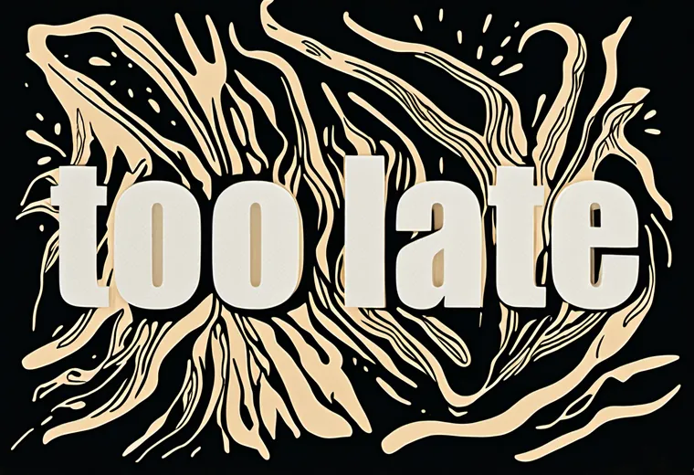
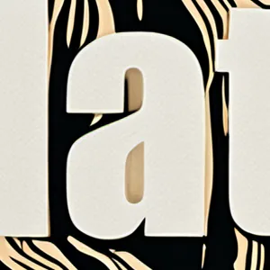

The charter promises a letterform whose substance means what the word means. Here is that promise, blind. Seven voices from BLUELINE, the word hidden, one letter each. You name the speaker; the rule for what counts is set before you start.
A word from an older render of the suite, before the skeletons went hand-drawn. Read it with the card beside it.

With the card hidden you would still know: too late means what it means in any font. So a fair test has to take the word away and leave the form. Cut one letter out, square, and look again.

Set the rule first: the step before this one.
The page says the font carries the source before any pixel: Nosifer bleeds, Bangers shouts. So run the same seven trials on the same letters, set alone in each voice's named font, with no diffusion at all. Same chance, same rule. If the fonts score as well as the full pipeline, the feeling was in the font; if lower, diffusion added it.
The fonts here are the script's per-voice picks (text-prompts.json). The renders in the first round were made on one font, Chalkduster, for every voice, so this round tests the page's claim about fonts, not the fonts behind those renders.